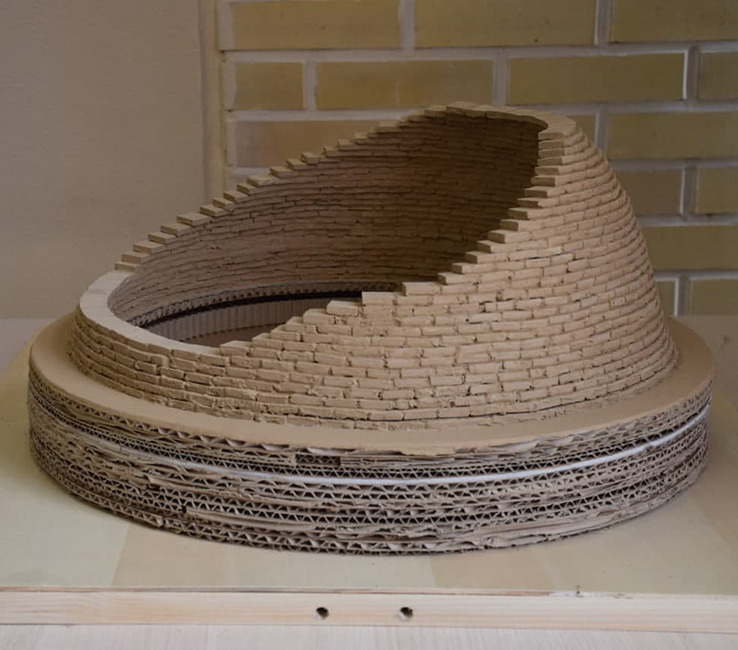
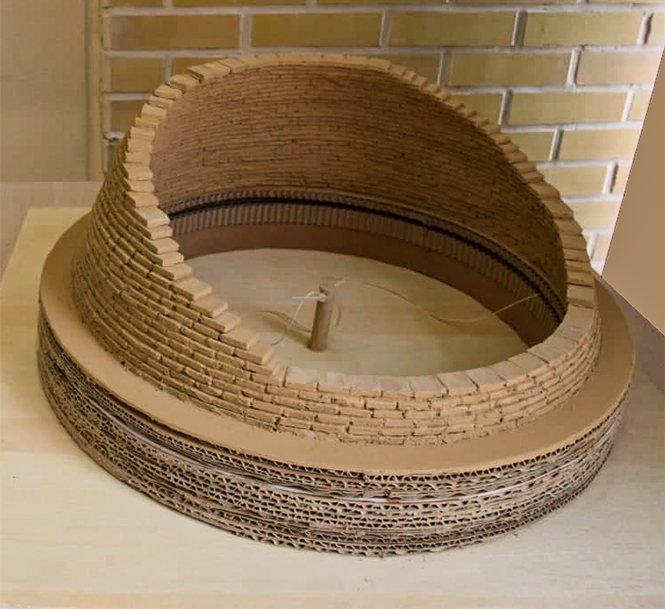

This is a Seboi dome which is made by Chamaneh arch. we build this maquette by traditional methodes in Iranian architecture
and also we uesed traditional material such as mud and raw clay.
▾


In this traditional methode we should put
an element
the center of our circle
which had a groove for the string and
we made a mechanism that
we could
revole
a string around a center
so we located every brick by
using the string.
▾